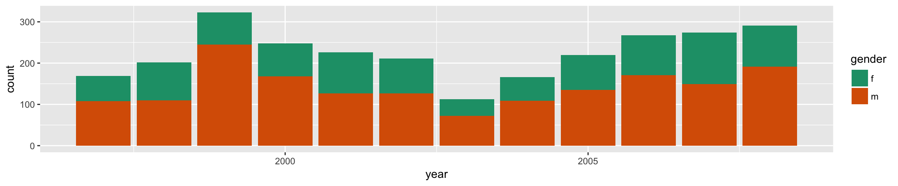
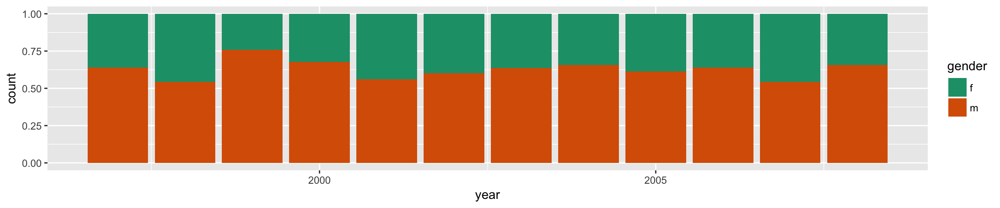
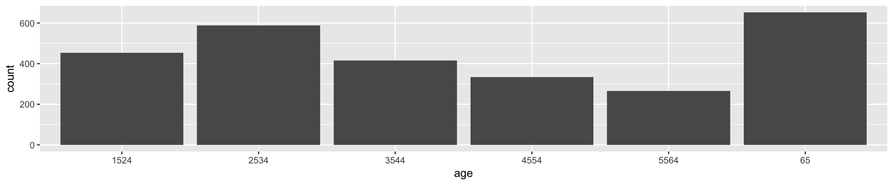

Basic R usage
Overview
- Projects
- Packages, and conflicts in names of functions
- R markdown
- Basic grammar for making plots
- Barcharts: making and interpreting
- Scatterplots: making and interpreting
- Side-by-side boxplots
Projects
Keep your work organised
- Make a project for the class (upper right hand corner or RStudio window)
- Open this project each time you start RStudio to work on exercises for this course
- A project is a “folder” on your computer that stores the files you create or save
- It helps to create directories underneath this to help organise different parts, and make it easier to share your work with others, for e.g. creating and using a
datafolder in the project folder allows relative file referencing liketb <- read_csv("data/tb.csv")which will work across any computer platform. - When you exit RStudio after finishing your work, it is a good idea to choose “Don’t save” your workspace. Hopefully everything that you do can be easily reproduced. Not storing the objects you have created helps to avoid conflicts down the road.
Package system
Because so many people contribute packages to R, it is a blessing and a curse. The best techniques are available, but there can be conflicts. The summary that is printed when you load the tidyverse library is a great summary of this.
library(tidyverse)Example TB incidence
Read the data, tidy it, and filter only records for Australia
library(tidyverse)
tb <- read_csv("data/tb.csv")
tidy_data <- tb %>%
gather(demo, count, -year, -iso2, na.rm = TRUE) %>%
separate(demo, c("gender", "age"))
tidy_data <- tidy_data %>%
filter(!(age %in% c("014", "04", "514", "u")))
tb_au <- tidy_data %>%
filter(iso2 == "AU")Make a bar chart
ggplot(tb_au, aes(x = year)) +
geom_bar(aes(weight=count))
- Grammar
- data: tb_au
- mapping: x=year, counts are aggregated and mapped to y
- What do we learn?
- Counts vary from a little over 100 to over 300
- There was a drop in incidence in 2003, but it has since risen again
By gender
ggplot(tb_au, aes(x = year, fill=gender)) +
geom_bar(aes(weight=count)) +
scale_fill_brewer(palette="Dark2")
- Grammar
- data: tb_au
- mapping: x=year, counts are aggregated and mapped to y, gender is mapped to colour
- creates a “stacked bar chart”
- What do we learn?
- Counts for females looks to be lower than men every year.
Change the mapping to focus on proportion
ggplot(tb_au, aes(x = year, fill=gender)) +
geom_bar(aes(weight=count), position="fill") +
scale_fill_brewer(palette="Dark2")
- What do we learn?
- Proportion of tb incidence is lower in females than males, and ranges between 55 to 75%.
Examine by age
ggplot(tb_au, aes(x = age)) +
geom_bar(aes(weight=count))- What do we learn?
- Incidence drops in middle age, affects younger and older people more.
Examine by age and year
ggplot(tb_au, aes(x = year)) +
geom_bar(aes(weight=count)) +
facet_grid(~ age)- What do we learn?
- The pattern holds across years, that incidence is lower is middle age.
- The higher incidence of TB in recent years appears to be affecting the young population more than any other.
Examine by age, gender and year
ggplot(tb_au, aes(x = year, fill=gender)) +
geom_bar(aes(weight=count)) +
scale_fill_brewer(palette="Dark2") +
facet_grid(~ age)- What do we learn?
- Does seem to affect males more, but hard to say because main pattern is varying heights of bars. To examine relative incidence of male and female, need to focus on proportions.
Focus on proportions
ggplot(tb_au, aes(x = year, fill=gender)) +
geom_bar(aes(weight=count), position="fill") +
scale_fill_brewer(palette="Dark2") +
facet_grid(~ age)
- What do we learn?
- Increase among youth in recent years appears to affect females as much as males
Separate focus for males and females
This way, “side-by-side bars”:
ggplot(tb_au, aes(x = year, fill=gender)) +
geom_bar(aes(weight=count), position="dodge") +
scale_fill_brewer(palette="Dark2") +
facet_grid(~ age)or this way:
ggplot(tb_au, aes(x = year, fill=gender)) +
geom_bar(aes(weight=count), position="dodge") +
scale_fill_brewer(palette="Dark2") +
facet_grid(gender ~ age)
- What do we learn?
- Increase among youth in recent years is more dramatic among males. For females it is more pronounced in the 25-34 age group.
PISA data
Load the data, and make some calculations:
- ST004D01T is the gender of the student
- code creates a new variable called gender, and makes the labels “girls” and “boys” to replace 1 and 2.
load("data/pisa_au.rda")
pisa_au <- pisa_au %>%
mutate(gender = factor(ST004D01T,
levels=c(1,2),
labels=c("girls", "boys"))) This creates a side-by-side boxplot, of math scores by gender. A basic boxplot is constructed from a five number summary:
- minimum, Q1, median, Q3, maximum
where Q1 is the first quartile, the value that has 25% of numbers below it, and similarly Q3 is the third quartile with 25% of numbers above it.
The boxplot has a box and whiskers. The box is drawn between Q1 and Q3, and a line representing the median is drawn inside the box. The whiskers connect the box to the most extreme expected points. In practice, this is 1.5 times the size of the box. Any points more extreme than this are drawn individually, as dots.
Boxplots are used to compare distributions of numbers
ggplot(pisa_au, aes(x=gender, y=PV1MATH,
fill=gender)) +
geom_boxplot() + xlab("") + theme(legend.position="none")What do we learn?
- The distribution of math scores are quite similar between boys and girls in Australia.
- The median for boys is slightly higher than girls
- Q3 is slightly higher for boys, but Q1 is similar.
- The boys has a slightly higher max and min score.
Knowledge check
Scatterplot
The PISA scores that are reported have multiple values for each student. This is interesting. They don’t actually report the individual scores that a student gets! They build a big linear model for scores based on all of the demographic variables (school, age, gender, …), and simulate scores from this model. In 2015 10 math scores were reported for each student. We can look at how these are similar or different by making a scatterplot.
ggplot(pisa_au, aes(x=PV1MATH, y=PV2MATH)) +
geom_point() +
xlab("Math score 1") +
ylab("Math score 2") +
theme(aspect.ratio=1)Its a bit dense, and this can be thinned out by making the points transparent.
ggplot(pisa_au, aes(x=PV1MATH, y=PV2MATH)) +
geom_point(alpha=0.1) +
xlab("Math score 1") +
ylab("Math score 2") +
theme(aspect.ratio=1)
What do we learn?
- There is positive, linear association. That is, if a student’s first score is low, then the second score is low too.
- There is considerable variability also. Suppose a student’s first score was 300, the second time it was simulated it may have been less than 200.
Your turn
grad <- read_csv("data/graduate-programs.csv")
grad %>% top_n(10)- Exercise 1:
- Make a side-by-side boxplot of the AvGREs by subject.
- Explain the difference between the programs. (If you need to, lookup what the meaning of GRE is.)
- Exercise 2:
- Make a scatterplot of AvGREs against AvNumPubs, facetted by subject.
- Explain the relationship between the variables, and any difference between the programs.